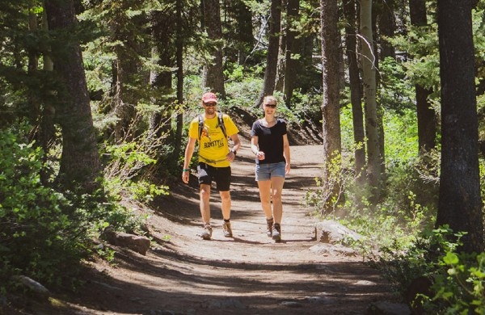

Fish Haven Idaho
Five Day Forecast
Upcoming Events:
Bear Lake Bike & Hiking Trails

As spring makes its way into Bear Lake, early leaves and flowers welcome you as you ride or walk a lake
or mountain trail. Temperatures are mild, even during the middle of the summer, so hiking is pleasant.
The fall months of September and October are some of the prettiest and most scenic with the brightly
colored leaves and the tranquility of the lake. Find Bike and Recreation Rentals!
Our Main Trails with maps are at the bottom of the page. Here are some other trails without maps:
Garden City Park Walkway
A raised wooden walkway to the lake at Garden City Park.
Limber Pine Trail
A relaxing one mile loop to the 2,000 year old limber pine.
Great Western Trail
A trail that extends from the Arizona border all the way to the Canadian border. The trail passes
through the Wasatch/Cache National Forest and Bear Lake area.
Bloomington Lake Trail
Hike or drive via a rough, unpaved road. This small glacial lake is located in a spectacular setting of
cliffs and waterfalls. During the summer, wildflowers Surround this clear mountain lake.
Logan Canyon Trails
Logan Canyon National Scenic Byway is home to several great mountain biking trails. Whether you are an
advanced rider or want to take the family for an enjoyable ride, you’ll find trails for all skill
levels.
Highline Trail
A 55-mile trail accessible from Bloomington Canyon, Paris Canyon, Emigration Canyon and Logan Canyon.
Open to hiking, horseback riding, motor bikes and mountain bikes.
Hodges Canyon
The trail passes through the South Sinks area, near the top. The sinks are indentations in the earth
caused by water eroding the limestone beneath.